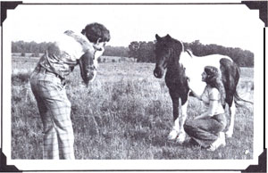
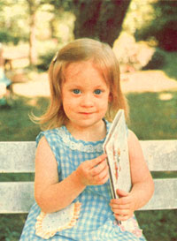
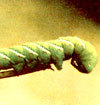
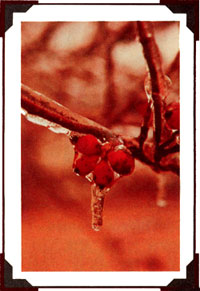
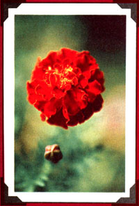
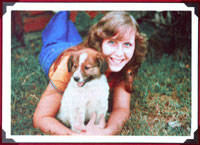
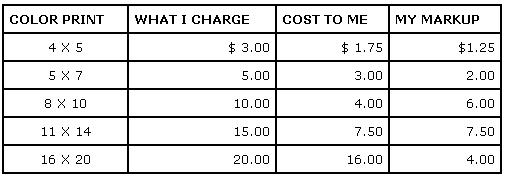

If you'd like to live in the country work at a really enjoyable job, and earn good money, too ... consider becoming a rural photographer. Country camera work [1] takes no prior photographic experience, [2] requires only a small initial investment (you should be able to purchase your equipment and start advertising for $400 or less!), and [3] is a downright sociable occupation.
Now, don't get me wrong . . .the rural photography business isn 't a 'snap". For one thing, you'll have to have enough get-up-and-go to drum up all your own customers ... and your bus iest working hours will be odd times like weekends and afternoons.
Country picture-taking won't make you rich, either ... but it sure pays the bills! And-if you don't want to jump into the new occupation all at once - photography also makes an excellent parttime pocket-stuffer: You can earn $300 to $400 a month even if you only work on Saturdays and Sundays. Heck, I've actually cleared a sweet hundred bucks from a weekend wedding ... for only two hours of pleasant labor!
Of course, you can't take pictures without camera equipment ... and you may think that acquiring such specialized paraphernalia will mean spending your bottom dollar on a collection of meters, filters, lenses, doodads, and other gizmos too complex to name ... but it ain't so. You'll only need three basic "tools" to set yourself up: a camera, a flash unit, and a set of studio lights. And the whole package doesn't have to run you more than $150 to $200!
Your picture-taker should be-like mine-a good, single-lens reflex camera (the "SLR" feature means that the lens you view through takes the picture ... so what you see is exactly what you get). Most portrait and wedding specialists use a large-negative, 2-1/4-size camera ... but I've managed to get along quite well with my more versatile 35mm "box".
Whichever model you choose, your camera will be your biggest investment ... but it doesn't have to be a wallet buster. You can find a good, used 35mm snapper-with lens-for between $75 and $300 (new ones start around $150 and go on up - way up-from there). Larger-format, 2-1/4 cameras usually cost somewhere between $100 and $300 used (while new ones start at $300).
The trick to keeping your camera costs down is to shop around. Don't buy the first acceptable-looking imagecatcher you see. Sure, you'll need a good camera, but-if you "forage" hard enough-you can find one at a good price, too! Generally speaking, department stores will charge less than photography stores ... big cities will have more competitive prices than small burgs ... and mail-order companies-that advertise in the back pages of periodicals like Photography Magazine - may offer the best equipment bargains of all.
Since you want to be able to shoot your pictures wherever you can get the business (a successful rural photog does a lot of traveling!), you'll need a portable flash unit. I prefer the battery-powered light sources over the rechargeable ones, but "new 11 prices-for either type of flash outfit-start at around $20.
Finally-to round out your equipment-you'll need three studio lights for indoor and portrait shots. However-rather than dishing out, say, $80 total for three new brighteners-you can easily create your own for a little over $30. Just buy some department or hardware store clamp-on sunlamp-type reflectors ($9.00 each), screw in 250-watt light bulbs ($1.25 each), and fasten the 11 shiners" to old hatracks or welded vertical stands. Then-if you use film that's balanced for tungsten lighting-the homemade studio beams will illuminate (perfectly) your best professional indoor portrait pictures.
Unfortunately, just because you acquire a full set of photographic equipment, people aren't going to run up to you with their hair combed (and their wallets opened) requesting your picturetaking services. No sirree, when you're self-employed you have to sell yourself! (Well, once someone contacted me with a new business idea: A small town politico woke me up at 2:00 a.m. because he wanted me to go photograph his opponent's "dirty tricks" . . . but that was definitely the exception to the rule!) So get out there and look for every possible moneymaking opportunity. For instance, Little League baseball games, school yearbooks, family reunions, small business brochures, church socials, county fairs, and so on can all be photo bonanzas ... if you constantly go to the people involved with your creative suggestions.
Of course, advertising, too, will bring in customers and should be considered an ongoing business expense. However, you should-with a little common sense-be able to limit your initial publicity costs to around $100.
My ad campaign began with some promotional flyers that-to avoid postage-I personally delivered to every mailbox within a 20-mile radius. I saved a typesetting lie for these "get acquainted" sheets by designing the promo paper myself and then having it reproduced "as is". The printer's fee-for 500 copies-was only $20. (One tip: The postman may confiscate your customerenticers if you-illegally-place them inside mailboxes. Instead, leave such materials by folks' doors or behind their postbox flags.)
I also made up 500 handy business cards (at a cost of only $10) and ran a series of local newspaper advertisements. Small-town ads are generally priced around $2.50 to $3.50 a column inch (on a contract basis) ... and the inexpensive exposure that they'll give you can really bring in customers. You might even advertise a low-cost "portrait special" to help get your business rolling.
A good ad should clearly state your services (and some of your prices). In my own promotions I always mention the four rural photographer's mainstays: studio portraits, outdoor portraits, wedding packages, and copies.
Studio shots are the profitable meat-and-gravy of the country photo business. To set up your own "professional" studio, simply pick a spare room-or a good corner in a living room-and drape some material (choose a friendly pale color like light blue) on the back wall. Find a sturdy coffee table for a posing bench, and then set up your camera and lights. I position my main light just to the right of the camera, my fill-in beam (slightly higher than the main one) on my left side and a bit farther away from the subject . . . and a low background light close to the right side of the backdrop.
If you remember posing stiffly for indoor shots yourself, you'll understand why I prefer to take my portrait shots in outdoor settings. When you work at the customer's home or farm (in such instances you should charge extra for traveling expenses, or-if the folks aren't going to order many pictures-fix your rates on an hourly basis), you'll find lots of interesting prop-and-shot situations. What's more, people are always more relaxed on their own "turf", and consequently make more natural-and photogenic-subjects.
The real jackpots of rural "pixing" are wedding ceremonies. A modest home service will bring you $50 to $60 for 20 small pictures (and that sure ain't slim pickin's) . . . but those fullblown church extravaganzas are the biggest paydays a country shutterbug can have. I generally take anywhere from 36 to 56 shots at a big ceremony (these include plenty of "extras" . . . just in case I misjudge my initial settings), get them all made up in silk-finish, 31/2- by 5-inch prints for the customers, and-as part of the package-let the newlyweds pick their 10 favorite shots to be blown up to 8- by 10-inch size. Then I buy some inexpensive photo "books" and put the whole shebang together into one nice wedding album. Cost to me: $75. Charge to them: $175. Profit: a very agreeable $100. If you get established as a marriage photographer- and find one nuptial service a week to record-you can make as much as $400 a month for eight hours of weekend work!
A good bit of my business comes from copying family pictures: keepsakes that range from the she of a penny to bigger than 16 by 20 inches. This sideline requires an extra equipment expenditure ($25-$40) for a set of three dose-up lenses that will let you get within an inch or two of the memento you're duplicating. But copying is in steady demand in rural areas, so I've found this onetime investment well worth the cost.
Now, all those beautiful pictures aren't much good inside your camera, so-unless you have your own darkroom equipment (a costly asset)you're going to have to get your pictures developed by a commercial processing lab.
There are two ways to choose your processor. One is to go the national mail-order route and locate some magazine-advertised company that will handle your business. A good firm can be hard to find (and one that does slow or poor quality work can cripple your enterprise), so try to shop around until you've latched onto a sure winner. I've had success with: Pro Photo (Dept. TMEN, 213 S. Tyler Avenue, P.O. Box BH, Lakeland, Florida 33802), Professional Color Lab (Dept. TMEN, P.O. Box 1600, South Bend, Indiana 44634), and Associated Photographers (Dept. TMEN, 3710 Main Street, Kansas City, Missouri 64111).
The other way to choose a processor is to look for a small local business that will handle your needs. This "corner store" may charge a bit more than the national companies ... but the nearby processors often take only half as long as the "big boys" to develop and deliver your film, may allow you to establish a monthly account, and are easier to deal with if you have a complaint.
Once you've come to terms with a picture printer, you'll know how high your main operating expense will be. You can then mark up from that printing cost, trying-of course-to keep your prices within the range of any competing photographers. Don't set your fees so high that no one will buy ... but don't be so "competitive" that you undersell yourself, either. The chart below-which shows some of my markups-will give you more of a feel for pricing:
Whatever your fees, be sure to give your customers quality work and honest service. Also-when striking a deal-always describe your services clearly, explain your prices, and make sure you go a 50% deposit (that way, your expenses are covered if your customers should "forget" to come back and purchase the pictures).
You might have to collect a sales tax, as well (check your state's Department of Revenue office for this information). Also, keep good records ... not only for your own tax purposes, but also because it's well nigh impossible to correctly guess whether you're making money, breaking even, or quickly going broke.
There's not too much more I can tell you about getting started in this business. When I decided to move out of the city and do country photo work, I simply dived into the enterprise "head first". I nearly hit bottom, too, before my business began making money. But now I live where I want, work when I want ... and nobody tells me what to do.
You can plunge in as drastically as I did, or start out on a (more sensible) part-time basis, I know that rural photography let me break my ties with city life ... and this rewarding occupation can do the same for you, too!
Wayne has explored a number of moneymaking ideas for a country shutterbug to try, but-as faithful MOTHER readers will realize-there are many more ways to use that camera of yours to capture some very nice greenery (and we don't mean foliage!). For instance:
[1] Livestock Show Photography: As Ham McQueen related in "Live stock Show Photography: Another Good Little Homestead Business" (MOTHER NO. 52, pages 24-25), taking photos of prize-winning farm animals can turn out to be a nice setup for you. In fact. one of our readers-David Arne Stolz Vfollowed Ham's advice and cleared $825 in the first week (see MOTHER NO. 55, page 125)!
[2] Freelance Photography: Jim Tallon revealed the secrets of his successful 18-year freelance career in "You (Dan Make Money as an Outdoor Photographer" (MOTHER NO. 44, pages 82-86).
[3] Tintype Photography: You can expand your portrait "biz" by taking a tip from Daniel Ogden (who took his tips from the "pio neers" of photography) and use tintype techniques to give some of your work an appealing "yesteryear" appearance (MOTHER NO. 32, pages 72-75).
If you'd like to order one or more of those back issues, send $2.50 for each copy - plus $1.00 shipping and handling per order - to THE MOTHER EARTH NEW (restricted) , P.O. Box 70, Hendersonville, North Car olina 28739. Happy snapshooting!
|
 PHOTOS BY THE AUTHOR A Heart-(and Wallet-) warming Portrait |
 Crawly Camera Work |
 A crisp shot |
|
 Photogenic Flora |
 Happiness is Rural Photography! |
 |
|
 |
|
|